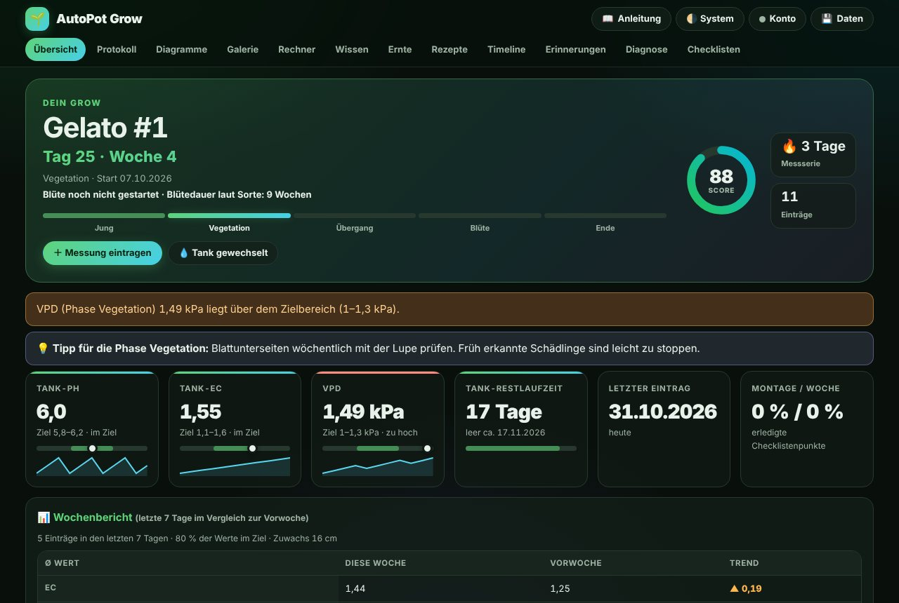
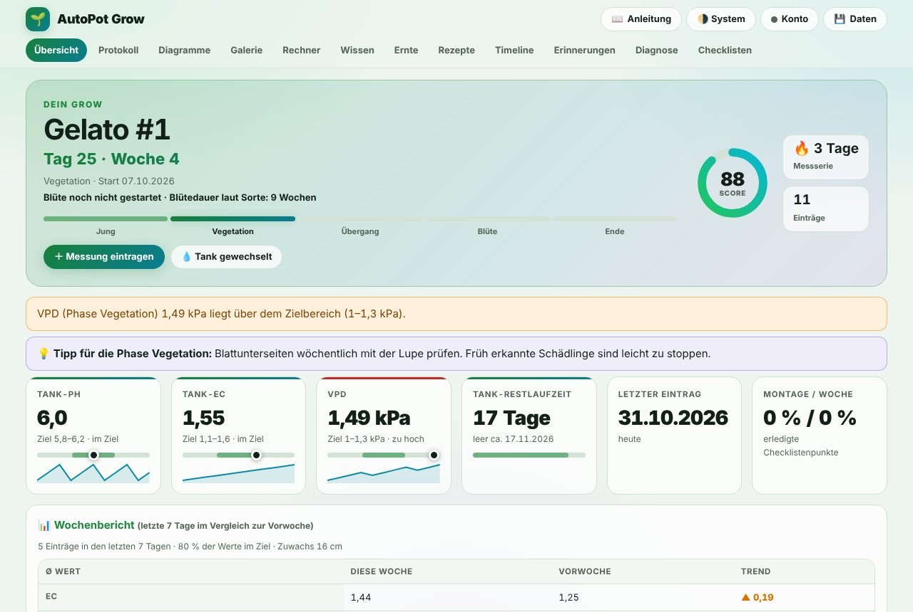
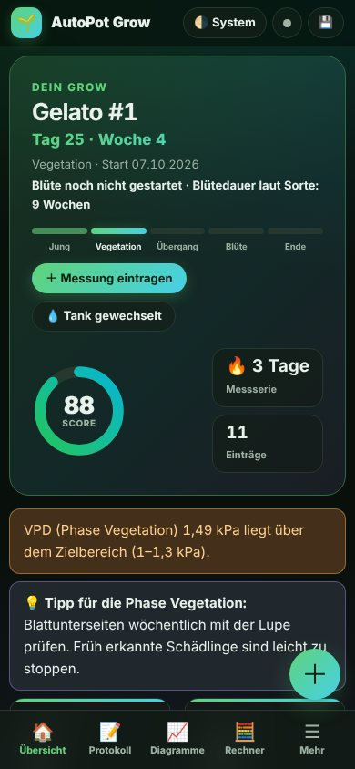

Dein Grow. Lückenlos dokumentiert. Überall dabei.
Messwerte, Diagramme, Fotos und Ernte-Auswertung für dein passives AutoPot-System. Alles läuft auf Handy und Rechner, ohne App-Store, und deine Daten werden verschlüsselt gespeichert.
Ohne Konto bleiben alle Daten nur in deinem Browser. Mit Konto werden sie synchronisiert.
🔞 Nur für Erwachsene ab 18 Jahren


Funktionen
Alles, was ein Grow-Tagebuch können muss
Entwickelt für passive AutoPot-Systeme mit Coco/Perlite und mineralischem Dünger, mit den Richtwerten aus der Anleitung hinterlegt.
Tag & Woche im Blick
Startdatum setzen, die App zählt Tage und Wochen. Phasenwechsel landen automatisch in der Timeline.
Grow-Score
Wie viele deiner Messwerte liegen im Zielbereich der aktuellen Phase? Ein Wert, der sofort zeigt, wo du stehst.
Diagramme mit Zielband
EC, pH, VPD, Klima, Licht, Verbrauch und Höhe. Zeitraum wählbar, Werte per Fingertipp.
Foto-Galerie
Fotos pro Eintrag, verkleinert und verschlüsselt gespeichert. Ein Wachstums-Zeitraffer im Vollbild.
Rechner & VPD-Heatmap
VPD, EC/Dünger, pH, Teilwasserwechsel, EC⇄PPM und DLI. Dazu eine Heatmap für das ideale Klima.
Tank-Assistent
Restlaufzeit, Tankwechsel-Intervall und Warnungen, bevor der Tank leer ist.
Ernte & Archiv
Ertrag, Trocknungsverlust und g/W. Grows abschließen, archivieren und neu starten.
Erinnerungen
Aufgaben mit Wiederholung, auch als Kalenderdatei (.ics) für dein Handy-Kalender.
Ernteprognose
Blütebeginn und Blütedauer der Sorte – die App zeigt Blütewoche und voraussichtlichen Erntetermin.
Wochenbericht
Durchschnittswerte der Woche im Vergleich zur Vorwoche, mit Trend, Zuwachs und Zielquote.
Wissen eingebaut
Richtwerte je Phase, Nährstoff-Lexikon mit Mangelbildern, Glossar und ein Tipp passend zur Phase.
Stromkosten
Was kostet dein Grow pro Tag, Monat und bis zur Ernte? Einfach Watt, Lichtstunden und Strompreis eintragen.
Zwei-Faktor & Geräte
Optionale Anmeldung mit Authenticator-App, Übersicht aller angemeldeten Geräte und Sicherheitsprotokoll.
Grow-Fahrplan
Woche für Woche: Phase, Lichtstunden und Zielwerte für EC, VPD, Klima und Licht – passend zu deiner Sorte.
Sortenbibliothek
Sorten mit Züchter, Typ und Blütedauer anlegen – die App rechnet Ernteprognose und Fahrplan danach.
Grows teilen
Auf Wunsch eine öffentliche Momentaufnahme mit Diagrammen und Fotos per Link teilen – jederzeit widerrufbar.
Hygrometer-Import
CSV-Daten von Govee, Inkbird & Co. einlesen: Tagesmittel für Temperatur und Luftfeuchte landen automatisch im Protokoll.
Trendwarnungen
Erkennt steigenden pH, Salzaufbau, zu warmes Wasser und Schimmelgefahr, bevor die Pflanze Symptome zeigt.
Vorher/Nachher
Zwei Fotos mit Schieberegler übereinanderlegen und das Wachstum direkt vergleichen.
Auch offline
Als App installierbar und ohne Netz nutzbar. Änderungen werden später automatisch synchronisiert.
So geht’s
In einer Minute startklar
Konto erstellen
E-Mail und Passwort genügen. Du bekommst einen Wiederherstellungscode für den Notfall.
Messen & eintragen
pH, EC, Klima und ein Foto in wenigen Sekunden. Die App bewertet sofort gegen die Richtwerte.
Auf dem Handy installieren
Seite öffnen, „Installieren“ oder „Zum Home-Bildschirm“ wählen. Fertig, ganz ohne Store.
Sicherheit & Datenschutz
Deine Daten gehören dir
- Verschlüsselt gespeichert. Messwerte, Notizen und Fotos liegen mit AES-256-GCM verschlüsselt in der Datenbank.
- Eigener Schlüssel pro Nutzer. Er wird aus deinem Passwort geschützt. Ohne Passwort, Wiederherstellungscode oder aktive Sitzung ist die Datenbank allein wertlos.
- Keine Klartext-Adressen. Deine E-Mail steht nur als Prüfwert (HMAC) in der Datenbank, nicht im Klartext.
- Passwörter nie im Klartext. Gesichert mit scrypt, mit Sperre nach Fehlversuchen (pro Konto und Netzwerk) und Begrenzung der Anfragen.
- Zwei-Faktor-Anmeldung. Optional mit jeder Authenticator-App; der geheime Schlüssel liegt ebenfalls verschlüsselt vor.
- Volle Kontrolle. Angemeldete Geräte einsehen und aus der Ferne abmelden, Sicherheitsprotokoll mit Warnung bei Fehlversuchen.
- Verschlüsselte Backups. Backup-Dateien lassen sich zusätzlich mit eigenem Passwort sichern (AES-256, PBKDF2).
- Keine Werbung, kein Tracking. Keine Cookies außer dem Anmelde-Cookie, keine Drittanbieter-Skripte.
- Export und Löschen jederzeit. Alle Daten als Datei herunterladen oder das Konto samt Daten endgültig löschen.
Ehrlich gesagt: Beim Anmelden verarbeitet der Server dein Passwort kurz im Arbeitsspeicher, um den Schlüssel freizuschalten. Es handelt sich deshalb um Verschlüsselung der gespeicherten Daten, nicht um Ende-zu-Ende-Verschlüsselung gegenüber dem Betreiber. Das Passwort zusammen mit dem Wiederherstellungscode zu verlieren bedeutet, dass die Daten nicht mehr lesbar sind.
scrypt (N=32768) → Schlüssel-Ketteentpackt deinen Daten-SchlüsselAES-256-GCM pro DatensatzMesswerte · Notizen · FotosFAQ
Häufige Fragen
Kostet das etwas?
Nein. Die App ist kostenlos und werbefrei.
Brauche ich einen App-Store?
Nein. Die Seite lässt sich als App installieren (Android: „App installieren“, iPhone: Teilen → „Zum Home-Bildschirm“) und läuft danach im Vollbild und offline.
Was passiert, wenn ich mein Passwort vergesse?
Mit dem Wiederherstellungscode, den du bei der Registrierung bekommst, setzt du ein neues Passwort, ohne deine Daten zu verlieren. Ohne Passwort und Code sind die Daten nicht wiederherstellbar. Das ist der Preis echter Verschlüsselung.
Funktioniert die App auch ohne Konto?
Ja. Ohne Konto bleiben alle Daten im Browser deines Geräts. Sie lassen sich per Backup-Datei sichern und später in ein Konto übernehmen.
Kann ich meine Daten mitnehmen?
Jederzeit: als JSON-Backup (mit Fotos), als CSV für Excel oder als vollständiger Export aus der Cloud.
Für welche Pflanzen und Systeme ist das gedacht?
Die Richtwerte stammen aus der mitgelieferten Anleitung für ein passives AutoPot-System (AirBase + AirDome) mit Coco/Perlite. Die Nutzung ist nur Erwachsenen ab 18 Jahren erlaubt. Beachte die geltenden Gesetze deines Landes – in Deutschland etwa die Vorgaben des Konsumcannabisgesetzes zum privaten Eigenanbau. Die App ist ein Dokumentationswerkzeug und gibt keine Garantien.
Bereit für deinen nächsten Grow?
Starte kostenlos, in einer Minute eingerichtet.